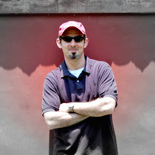
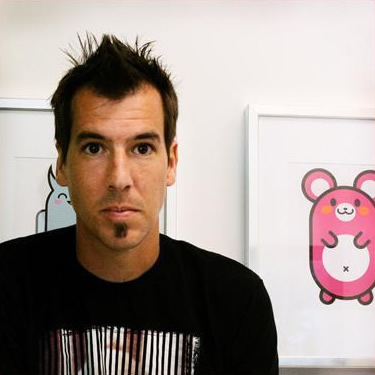

Meet with Mentors is a great opportunity to connect with industry experts who can guide you and your concepts. Schedule your sessions with mentors of your choice on Friday/Saturday and get connected.
Anne-Marie Clegg
Senior Partner Marketing Manager, VMware
Anne-Marie, a 7 year veteran at VMware, is currently part of the Channel and Alliance marketing organization where she focuses on product marketing and partner programs. Previously, Anne-Marie was responsible for the VMware technology partner program, which received the 2008 Software Industry Award for its Outstanding Partnering Program by Software Business Magazine. She has a degree in Computer Engineering with a minor in Russian Studies from Texas A&M university. Anne-Marie has spent most of her career in Silicon Valley working for a variety of technology companies including Accenture, Intuit and webMethods (now Software AG).
Anne-Marie has served as a mentor to high school entrepreneurs thru the BUILD program and most recently took time off to build houses in South India with Hands on Houses. She recently returned to Texas and resides in Austin where she enjoys taking advantage of the outdoors.

Blake Burris
CEO, CleanWeb Initiative
Blake is the founder of cleanweb and a leading expert on hackathons and the creation of grassroots innovation communities. Since 2011, he has been working to evangelize the #Cleanweb among entrepreneurs to apply information technologies to make our cities more livable and sustainable. His work is at the forefront of the Resource Revolution to create a new wave of environmental and economic prosperity. Blake has grown the Cleanweb into a global movement and network of Cleanweb communities, entrepreneurs and startups spanning 20 countries. He frequently speaks on opportunities at the intersect of technology and sustainability.
Keith Casey
Director of Platform, Clarify
Keith Casey currently serves as Director of Platform for Clarify working to make APIs easier, more consistent, and help solve real world problems. Previously, as a developer evangelist at Twilio, he worked to get good technology into the hands of good people to do great things. In his spare time, he works to build and support the Austin technology community, blogs occasionally at CaseySoftware.com and is completely fascinated by monkeys. Keith is also the author of "A Practical Approach to API Design" from Leanpub
Frank Preston
Media Strategist for Islamic World, Pioneers
Frank Preston earned his PhD researching the confluence of media and cell group formation in the recruitment and training of participants of radical Islamic movements. This expertise aids in understanding media and church planting movements among Muslim background peoples. Preston is now helping media strategist develop technology rich strategies that are deployed among Islamic populations. He writes a blog media2movements.org that discusses New Media strategies in outreach.
Preston’s research findings have been published in The Journal of Development Communication, Evangelical Missions Quarterly, Oxford Analytica, Studies in Conflict & Terrorism, and chapters in several scholarly books including one for West Point Military academy. He has presented his research findings in several international venues for government and non-government entities including churches. Frank and his wife Linda lived in Indonesia for twelve years where he was a bi vocational worker with Pioneers tasked with developing media strategies to reach Muslims.
Jason Illian
Founder/CEO, BookShout
Jason is the founder and CEO of RethinkBooks.com, a dynamic social e-book company which focuses on engaging and interactive content allowing people to read together. With more than 10 years of technology and executive experience, Jason Illian is a visionary in the mobile and social new media space. Having raised over $30 million for new business ventures, Jason has a passion for taking great ideas and making them businesses. His strategic thinking has helped corporations, organizations, non-profits, churches, and leaders be more innovative.
Jason is also the former CEO of Big Jump Media (godtube.com and tangle.com), a Christian video network that had over 4 million monthly users.

Jen Bullard
Founder, Texas Game Labs & Captivate Conference
A civic minded business woman I have been working to support the video game business ecosystem, and do so through my work on Captivate and the Texas Creative Incubator. These two initiatives have a healthy relationship with each other and I am currently working to develop both in tandem with several awesome people.
This all started when I tried to start my own venture and found little resources available for a fledgling start-up. After looking at the industry as a whole I realized there was a project there, rolled up my sleeves and got started. Now we are at the stage where things are taking shape, with an Incubator spinning up quickly to support creative industries and a conference to captivate professionals, entrepreneurs and educators.
My traditional background is an Executive Producer who has worked on a wide variety of titles, platforms and teams. I have worked well with executives, directors and leads to organize and manage the schedule, keep on budget and satisfy the needs of each individual team member. I possess a strong ability to develop and grow relationships with business partners. My goal is to leverage this background to smooth the communications between start-ups and investors, providing both groups with the support and information they need to be successful.
As the Chapter Chair of IGDA-Austin I have enjoyed building community, developing events and providing support to our local government as a representative of the gaming industry. My goal is to continue to expand the services that IGDA-Austin provides and continue to improve our community.
Jim Sheppard
CEO, Generis
Jim Sheppard is CEO and principal of Generis. He is an avid student of generosity and is passionate about spreading it throughout the church. For over 19 years, he has devoted his life to helping church people become more generous.
Jim is a frequent writer on generosity and ministry funding. His articles have been featured in NACBA Ledger, Your Church, Church Business, Church Solutions, Worship Facilities and BuildingForMinistry.com. He is co-author of the upcoming book, “Contagious Generosity.” He is also an inspirational speaker and he has spoken at national church related conferences including WFX (Worship Facilities), National Association of Church Business Administrators, Christian Leadership Alliance and Leadership Network. Jim is active in sharing his thoughts about generosity through Twitter (Jim_Sheppard) and his blog, www.jimsheppard.net.
Jim and his wife Nancy have two daughters, Anna and Emily, and live in Atlanta. He is actively involved in his church where he serves as an officer and provides leadership to the Generosity Ministry Team.

Kevin Koym
Founding Partner, Tech Ranch Austin
As a seven-time startup veteran and CEO and founder of Tech Ranch Austin, a venture accelerator for early-stage technology companies, Kevin Koym is a recognized pioneer in the startup community whose influence has been felt by over 4,000 entrepreneurs from 20 countries. His continuous ability to replicate entrepreneurial success for emerging technology companies is a result of a proven community-based approach to provide the support and pragmatic agitation needed for entrepreneurs to not just accelerate their business, but also disrupt their targeted markets.
His motivation to work with startups stems from his belief that supported entrepreneurs create more innovation, which leads to more solutions to address society�s most pressing issues. As a result, Kevin is known worldwide for his work in establishing entrepreneur networks in the U.S., Mexico, Chile, Singapore and Korea.
His distinguished career fuels his passion for advising startups, which has seen two $0-to-$1 million startups and four others that made the $500,000 mark, and a number of �firsts� including the development of the first internet banking application in 1995 and the first large-scale e-commerce application engine, which generated over $2 billion in revenue for Dell Computer in the late 1990s. Kevin was at the forefront of exploring profile-driven commerce, the use of Linux to secure networks and exploring the feasibility of Affective Computing. And, his experience working with technology luminary Steve Jobs at NeXT influences his ability to inspire the global entrepreneurs he supports.
In 2010, the Association of Information Technology Professionals, Austin Chapter, honored Kevin as �Technology Community Leader of the Year�. Prior to founding his own companies, and in addition to NeXT, Kevin worked for the UT Health Science Center, Southwest Research Institute, Motorola, and IBM, earned a degree in Electrical Engineering from the University of Texas, and is an Eagle Scout.
LouAnn Hunt
Digital Bible Manager
LouAnn Hunt is the Digital Bible Manager at Faith Comes By Hearing. She leads an awesome team who created the second-most downloaded Bible app, Bible.is, offering Bibles in over 800 languages. LouAnn also oversees the Digital Bible Platform, the world's largest digital library of Bible text, audio, and video content, which is available via API. Digital initiatives she manages include localization strategies, Deaf Bible app, KIDZ Bible app, Smart TV apps, radio, and satellite.She loves all things digital and is passionate about getting God's Word to everyone, everywhere in their heart language through every digital means available now and in the future. She is always looking for innovative solutions and out-of-the-box thinking to get the Bible into the hands of every human on earth. Her team's vision is for no one to have to search for the Bible in their language, "the Bible should just BE..."

Mary Beth Minnis
Producer and Mentor, Cru
After several years of serving in leadership roles with Cru, Mary Beth has shifted her focus to the world of documentary film-making. Propelled by a desire to make stories of redemption and hope known worldwide, she has been a part of producing two documentary shorts and one narrative short. "Return to Mogadishu: Remembering Black Hawk Down" is her latest film.

Matthew Watts
Digital Strategist, Campus Crusade for Christ International
Matt likes asking the "What if?", "What about?", and "Why not?" questions which eventually led him and his family to Asia for 12 years. Matt currently works in the US as a global digital strategist with Cru. While nudging that 63-year-old ministry toward digital maturity, he helps energize Indigitous.org, a group passionate about connecting people to Jesus using digital strategies.
Scott Yamamura
Co-Founder, Created To Create
Scott helped found the creative non-profit organization, Created To Create. He is leading the team from Seattle to form community amongst creatives, serve churches and non-profit organizations in their photo/video/design needs, and introduce a fresh, open and invitational perspective to bringing God's Kingdom to the creative culture and industry. He enjoys shooting videos that share the Gospel, challenges others to serve, and happens to be a retired professional skateboarder still serving with the ministry Boarders For Christ.

Ted Beasley
Co-Founder, Missional Business Challenge,Acton School of Business
Ted Beasley has lived at the intersection of faith and business for decades. In addition to launching ministries in Asia, Europe and Australia, he co-founded Gateway Church, a 6,000-member faith community in Austin Texas. For over a decade, Ted served as an executive coach and trusted advisor to CEO’s, senior leaders and entrepreneurs. Currently, he is a Master Teach at the Acton School of Business and serves as CEO of My Entrepreneurial Journey, an innovative blending learning program for aspiring entrepreneurs and business owners.
Troy Carl
Vice President, Faith Comes By Hearing
Revolutionary initiatives and programs led by Troy Carl include the development of the 40-day MP3 Bible program called You've Got The Time, the BibleStick, the Military BibleStick, the Audio Bible Ambassador software system, and the Digital Bible Platform, which features API Scripture distribution in nearly 800 languages via radio broadcast, digital download, SMS, streaming, and its premier mobile app network Bible.is. This platform has reached over 100 million unique users in 246 countries in under 36 months. Troy brings a strategic understanding of how to employ Internet and mobile technology in the service of God’s kingdom. He manages diverse teams of professionals across multiple disciplines including, fundraising and development, marketing and communications as well as digital technologists. Troy has sought out and developed Bible engagement campaigns that use state-of-the-art tools to bring people closer to God. One of these Bible listening initiatives is You’ve Got The Time, which is designed to combat biblical illiteracy and raise awareness of the need for Audio Scripture outreach to the world’s poor and illiterate people. Since 2006, nearly seven million men, women, and children in over 16,000 churches from 140 denominations have participated. Troy was also the president and CEO at eStarNetwork, a telecommunications Internet company. He also served on the board of directors of Cognigen Networks Inc. (OTC:BB CGNW), a publicly traded Internet company with gross sales of more than $50 million a year. Prior to that, he was the senior vice president/director of sales for WorldConnect Communications Inc.

Vince Marotte
Internet Pastor, Gateway Church
Vince Marotte is a communicator, futurist, speaker and consultant. He dwells in creative spaces and lives with ideas. Never satisfied with the status quo, he is always looking for a better way to do things. He recently wrote Context and Voice—communication design in our new media culture and also contributes regularly to Outreach Magazine.
Vince is currently the Internet Pastor at Gateway Church in Austin, Texas and has served in ministry since the 90′s. He was first a Youth Pastor in San Diego and Kauai, Hawaii and planted churches in Southern California. He is married to Tami (12 years) and father to daughter Ashtynne and son Steele. He is also a lifelong skateboarder, nature lover, foodie, craft beer enthusiast and competitive cyclist.